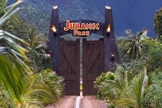
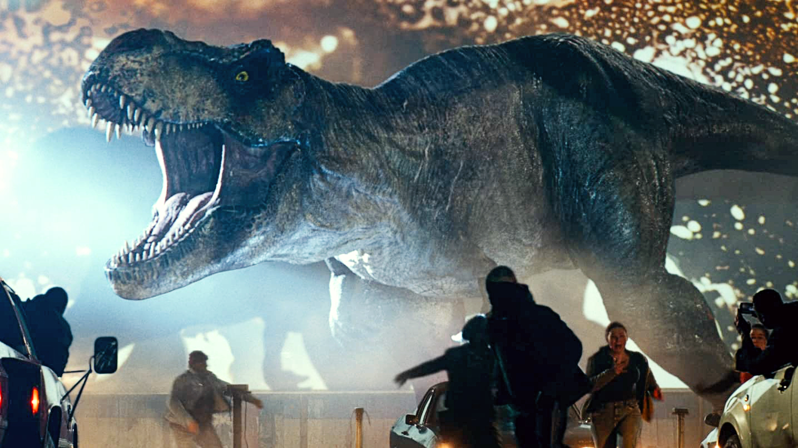

Welcome in our Park !
Welcome to Jurassic Park, where history meets the present, and dreams of time travel become a reality! Our park is not just a tourist attraction, but a true window to the past, allowing us to understand and appreciate the fascinating world of dinosaurs and prehistoric ecosystems. We are incredibly excited to share this amazing experience with you, which will forever change your perspective on the world of prehistoric giants. As soon as you step foot in our park, you will immediately feel an atmosphere full of anticipation and adventure. Our carefully designed entrance welcomes guests with an impressive gate, stylized to resemble ancient rocks and covered in tropical vegetation. This introduction already suggests that you are on the verge of discovering something absolutely extraordinary. The park staff, dressed in costumes reminiscent of the dinosaur era, will greet you with a smile and provide all the necessary information to make your visit as comfortable and exciting as possible.
As soon as you step foot in our park, you will immediately feel an atmosphere full of anticipation and adventure. Our carefully designed entrance welcomes guests with an impressive gate, stylized to resemble ancient rocks and covered in tropical vegetation. This introduction already suggests that you are on the verge of discovering something absolutely extraordinary. The park staff, dressed in costumes reminiscent of the dinosaur era, will greet you with a smile and provide all the necessary information to make your visit as comfortable and exciting as possible.
 Our goal was to create a place where history and the present can coexist harmoniously, offering visitors a unique educational and entertainment experience. In Jurassic Park, we have applied the latest technological advancements to transport you back in time and show you the world as it was millions of years ago. Through collaboration with leading paleontologists, engineers, and artists, we have created an environment that is so realistic that you will feel like you have truly traveled back to the Mesozoic era.
Our goal was to create a place where history and the present can coexist harmoniously, offering visitors a unique educational and entertainment experience. In Jurassic Park, we have applied the latest technological advancements to transport you back in time and show you the world as it was millions of years ago. Through collaboration with leading paleontologists, engineers, and artists, we have created an environment that is so realistic that you will feel like you have truly traveled back to the Mesozoic era.
Select an Article from Our Park from the Last Week
Work Accident

In the darkness of the night at Jurassic Park, where thousands of years of prehistoric history intertwine with modern technology, something unprecedented happened. Suddenly, as if on command, the lights went out, leaving guests and staff in complete darkness. The electric fence, which had previously separated them from potential danger, suddenly ceased to spark, and a dark silence filled the space. Enveloped in darkness, the sounds of dinosaurs became louder. The noise of footsteps and rustling suddenly caught the attention of those who had previously felt safe. The raptors, usually described as intelligent and cunning, began to gather around the fence, their shadows moving like specters in the darkness. Panic gripped everyone. Guests, who had moments ago admired the giant creatures from afar, now desperately sought shelter, aware that in this darkness they were completely defenseless. The park staff tried to maintain composure, but concern was evident in their eyes. Amidst fear and chaos, questions arose: What happened? Is it just a technical malfunction, or something more? Can dinosaurs understand that the fence is no longer working? In the darkness, where even the slightest sound seemed like a threat, the park plunged into silence, interrupted only by whispers and muffled screams. Jurassic Park, which had previously seemed like a place of wonders and fascinating discoveries, now became an arena of survival in the heartless night.
Closure for 5 Minutes
The closure of the park at Jurassic Park triggered a cascade of reactions, the effects of which were felt at every level. Here is a description of the situation: The long, metallic gates of the park, which were usually open to adventure enthusiasts, now slammed shut sharply with the sound of final closure. This symbolic act marked the end of days of open doors for guests. The park staff, who had previously crowded the corridors, working tirelessly on various aspects of attractions and safety, now acted decisively and swiftly. Their task was to ensure that every animal in the park would be safely separated from humans and other creatures. The announcement of the park closure was quickly communicated to both guests and staff. A large banner at the park gate displayed a warning about the closure, and megaphones along the pathways conveyed messages about the necessity of immediate evacuation. Guests, who had arrived earlier with hopes of an unforgettable adventure, now left the park with a sense of disappointment and disorientation. Many of them realized the gravity of the situation, seeing the park staff moving decisively and with concentration on their faces. A silence fell over the park, interrupted only by the sounds of preparations for closure. During this time, the park staff worked tirelessly to ensure that every animal would be safe and separated from humans until the situation was finally resolved. The closure of the park was a necessity aimed at ensuring the safety of guests, staff, and animals. It was also a symbolic ending to a chapter in the history of Jurassic Park, emphasizing the importance and responsibility that came with running such a place.
Feeding...
The closure of the park at Jurassic Park triggered a cascade of reactions, the effects of which were felt at every level. Here is a description of the situation: The long, metallic gates of the park, which were usually open to adventure enthusiasts, now slammed shut sharply with the sound of final closure. This symbolic act marked the end of days of open doors for guests. The park staff, who had previously crowded the corridors, working tirelessly on various aspects of attractions and safety, now acted decisively and swiftly. Their task was to ensure that every animal in the park would be safely separated from humans and other creatures. The announcement of the park closure was quickly communicated to both guests and staff. A large banner at the park gate displayed a warning about the closure, and megaphones along the pathways conveyed messages about the necessity of immediate evacuation. Guests, who had arrived earlier with hopes of an unforgettable adventure, now left the park with a sense of disappointment and disorientation. Many of them realized the gravity of the situation, seeing the park staff moving decisively and with concentration on their faces. A silence fell over the park, interrupted only by the sounds of preparations for closure. During this time, the park staff worked tirelessly to ensure that every animal would be safe and separated from humans until the situation was finally resolved. The closure of the park was a necessity aimed at ensuring the safety of guests, staff, and animals. It was also a symbolic ending to a chapter in the history of Jurassic Park, emphasizing the importance and responsibility that came with running such a place.
Contest 2024
Description of the Competition
Jurassic Park invites you to take part in a photography competition that allows you to immortalize the fascinating world of prehistoric giants. Participants have the opportunity to photograph the most realistic reconstructions of dinosaurs in various parts of the park and share their best shots. The competition encourages exploration of a variety of scenes, from dinosaurs in natural surroundings to scenes of prehistoric life. Each photo can become a unique shot, taking the viewer to the fascinating world of dinosaurs.
How to Participate?
Like all our social media channels.
Take realistic reconstructions of dinosaurs in the park.
Submit your best photos to our social media.
Evaluation Criteria
Aesthetics and quality of the photographs.
Originality and creativity of the shots.
Relevance to the theme of the contest and capturing the atmosphere of Jurassic Park.
Prizes
1. Exclusive Tour of Jurassic Park
2. VIP Annual Pass (80% discount on all attractions)
3. Weekend Stay at a Themed Hotel
Requirements
Participants must be at least 18 years old.
Participants must be in good physical and mental health to participate in contest activities.
Consent to Data Processing
Participation in Park's Social Media
A medical certificate confirming no health contraindications may be required.
Please send your entries to our email: jurrasicpark@gmail.com